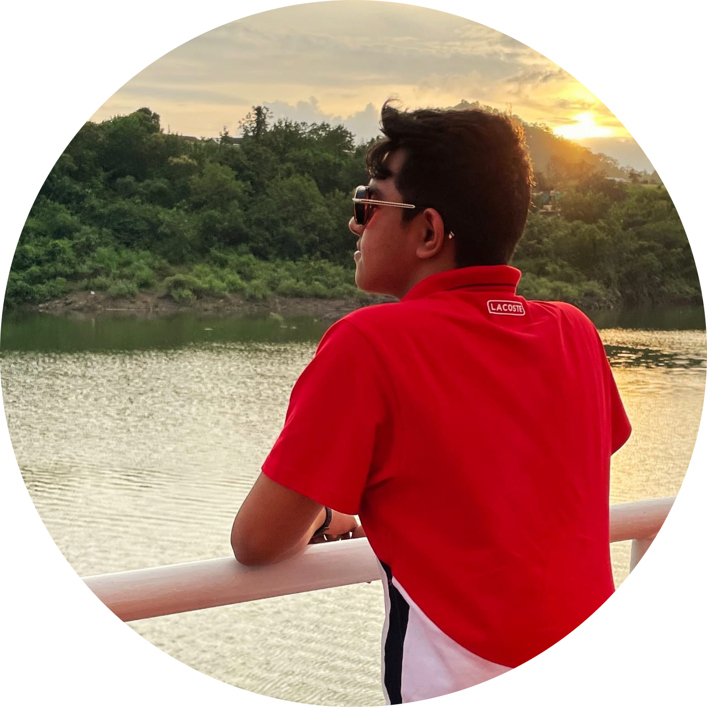

|  |
Abhigyan BafnaAspiring EngineerDepartment of Information Technology Mumbai University |
I am a student at Thadomal Shahni Engineering College associated to the University of Mumbai. Aren't the feats achieved by computers fascinating? I mean VR, astronomical calcuations, chess engines, artificial intelligence, folding phones, flying cars... Seems like a dream world to me! Hence I am excited to learn to talk to machines and become an Engineer. True Engineers, are very scarce in our world. A true Engineer (my perspective) is a calculating, knowledgable doer who solves problems efficiently and learns every byte from their mistakes.